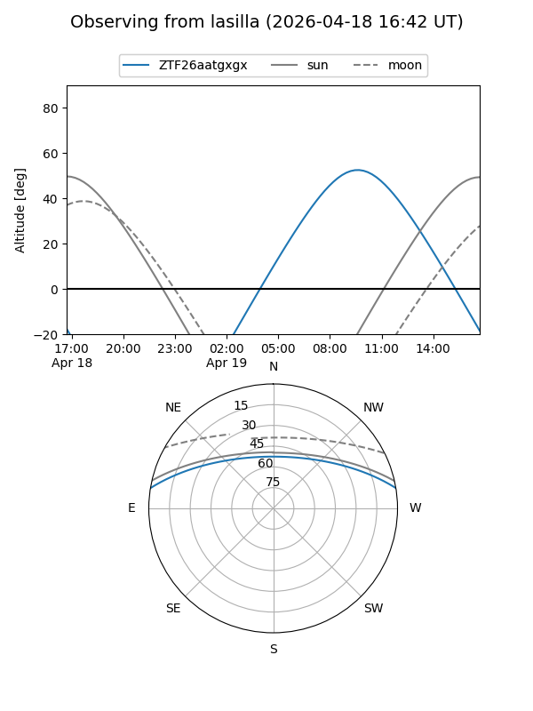
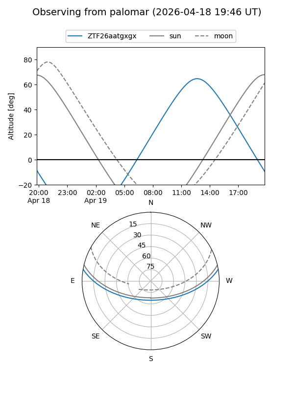

ZTF26aatgxgx
Target ZTF26aatgxgx at 2026-04-18 14:17
Aliases and brokers:
FINK: link
Lasair: link
ALeRCE: link
alt names
ZTF26aatgxgx (ztf,fink_ztf)
Coordinates:
equatorial (ra, dec) = 280.6172,+8.15295
equatorial (HMS+DMS) = 18:42:28.12,+08:09:10.62
galactic (l, b) = (39.1949,+5.68937)
Flags:
Photometry:
last ztfg=19.54
1 ztfg detections
Lightcurve
Visibility


Additional plots